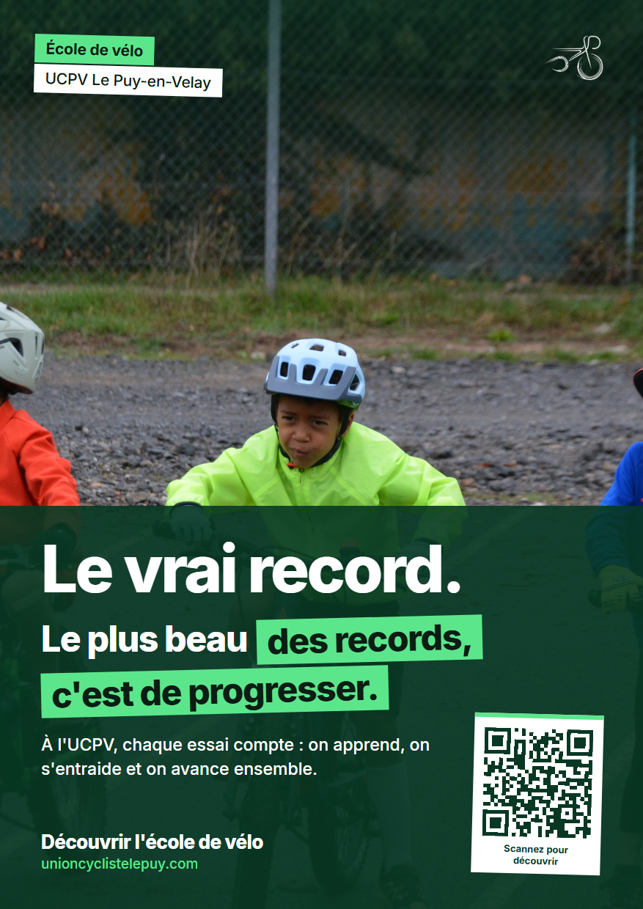
Union Cycliste
du Puy-en-Velay.
« Le plus beau des records, c'est de progresser. »
Campagne 360° pour le club cycliste ponot : refonte de l'identité visuelle, affiches print & web, stratégie réseaux sociaux multicanale, relations presse et spot vidéo de 30 secondes.
Faites défiler pour lire l'étude de cas ↓- Commanditaire
- UCPV (Fondé en 2004, FFC / FSGT / UFOLEP)
- Cadre universitaire
- SAÉ 302 · BUT MMI 2 (IUT Clermont Auvergne)
- Mon rôle
- Chef créatif & DA, Affiches, Identité, Storyboard, RS
- Concept & Signature
- « Le vrai record : le plus beau des records, c'est de progresser »
Prendre le contre-pied du culte du chrono.
Dans le cadre de la SAÉ 302 « Produire des contenus pour une communication plurimédia », notre mission consistait à concevoir une stratégie globale et l'ensemble des contenus associés au profit d'une organisation sportive locale engagée dans une démarche de Responsabilité Sociétale (RSE).
Alors que la communication historique de l'Union Cycliste du Puy-en-Velay était quasi exclusivement focalisée sur les courses du week-end et les podiums des coureurs seniors, notre analyse terrain nous a poussés vers une rupture franche : mettre en lumière l'école de vélo, qui accueille des jeunes dès 4 ans, la section paracyclisme / handisport, et les dispositifs d'accès pour tous comme le prêt gratuit de vélos et la bourse annuelle.
L'idée du concept « Le vrai record » est née lors d'un entraînement sur la piste : un enfant hésitait devant un obstacle de terre ; après quelques mots et l'accompagnement patient de son éducateur bénévole, il l'a franchi dans un immense sourire. C'est cela, la vraie victoire.
À l'UCPV, chaque essai compte et chacun progresse à son rythme.
Redéfinir le concept de réussite sportive en valorisant le dépassement de la peur, l'entraide intergénérationnelle et l'apprentissage bienveillant plutôt que la seule pression du chronomètre.
- Inclusion sociale : prêt de vélos pour lever la barrière financière de l'équipement.
- Section Paracyclisme : accueil des sportifs en situation de handicap.
- Éducateurs bénévoles : reconnaissance de l'engagement humain quotidien.
La charte graphique et les 27 déclinaisons du logo.
Pour harmoniser tous nos supports (affiches A4, publications Instagram et habillage vidéo), j'ai conçu une charte graphique complète autour du vert historique du club et des paysages de Haute-Loire.
Choix typographiques assumés :
Pour sortir des poncifs visuels et donner une voix singulière au club, j'ai sélectionné le diptyque typographique : Barlow Condensed Bold pour les titres percutants, massifs et sportifs, et Inter Regular pour le confort de lecture des textes d'accompagnement.
Signature géométrique :
J'ai introduit le double tag d'en-tête incliné à +1,5° (cartouche menthe « École de vélo » superposé au cartouche blanc « UCPV Le Puy-en-Velay ») ainsi qu'un surlignage menthe incliné à -1,4° sur les mots-clés du slogan, matérialisant visuellement la pente et la trajectoire ascendante de l'apprentissage.
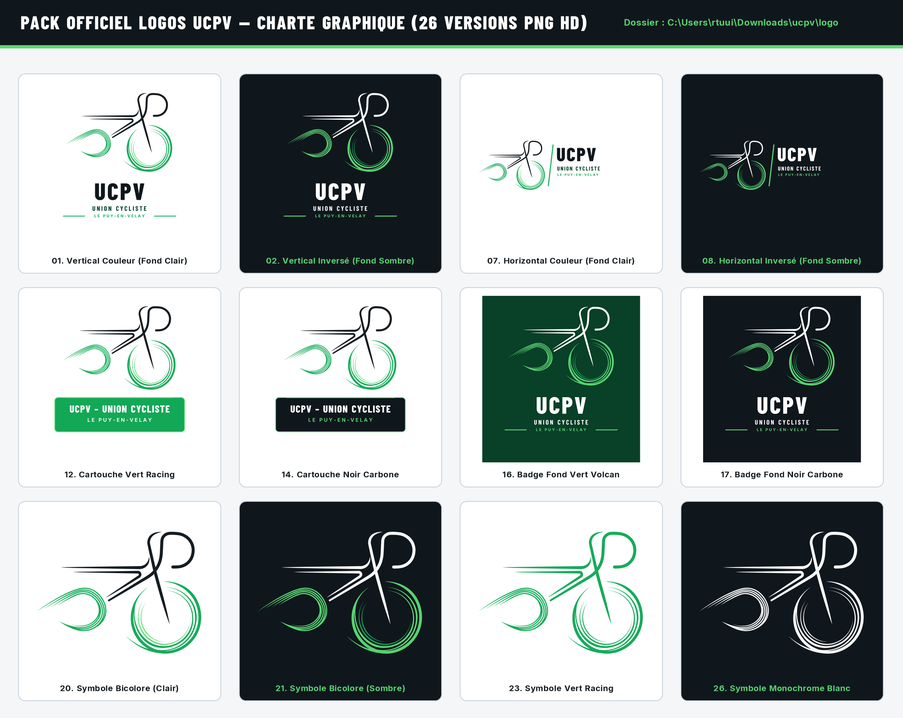
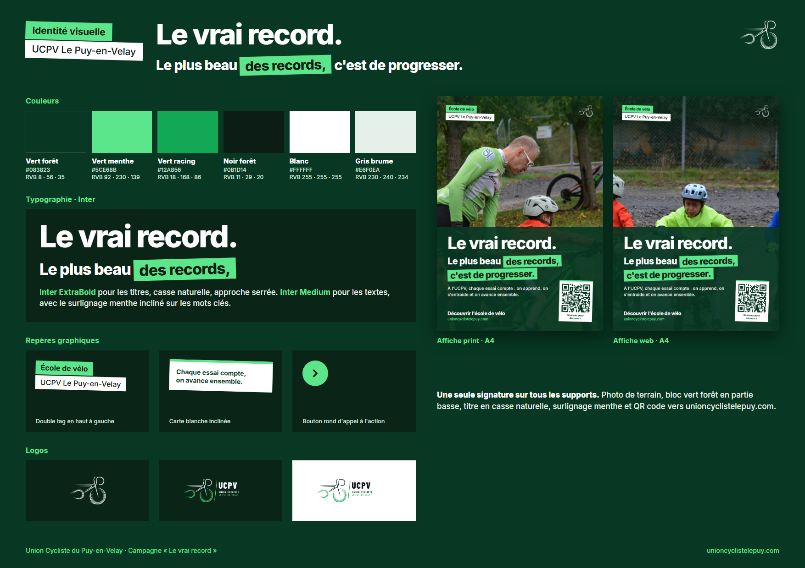
Deux déclinaisons pensées pour le terrain et les écrans.
Pour concevoir les affiches A4, j'ai fait le choix délibéré d'un design épuré, structuré et authentique, à l'opposé des visuels surchargés. La composition repose sur une séparation nette en deux moitiés :
- Moitié supérieure : Photographie de terrain plein format sans artifice. Pour l'affiche Print, un entraîneur accroupi auprès d'un enfant pour valoriser l'accompagnement humain ; pour l'affiche Web, un jeune cycliste roulant vers l'avant avec un franc sourire.
- Moitié inférieure : Aplat solide Vert Forêt (#083823) garantissant une lisibilité maximale au slogan et aux informations pratiques.
- Conversion immédiate : Intégration d'une carte blanche inclinée accueillant un QR code vectoriel net vers le site officiel
unioncyclistelepuy.compour simplifier les prises de contact des familles.
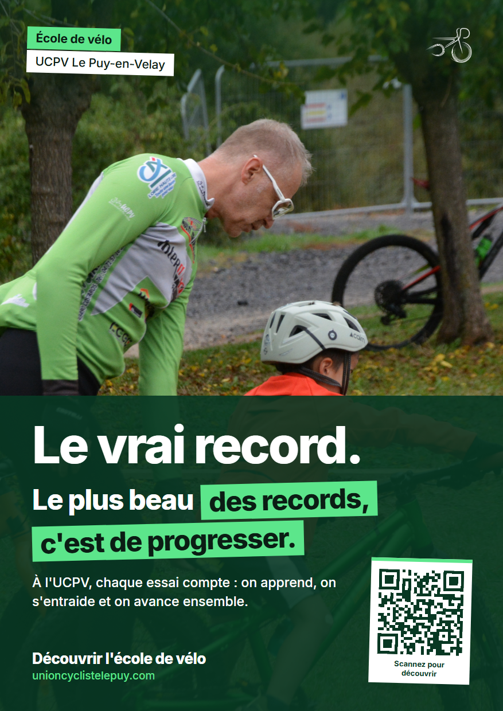
Déclinaisons pour Instagram, Facebook et LinkedIn.
Sous Adobe Illustrator, j'ai préparé une série de publications (format 1080×1350 px) adaptées aux différents publics du club : jeunes, parents, bénévoles et partenaires locaux.
Le carrousel : Découvrir, Apprendre, Progresser
Ces 3 visuels se suivent de gauche à droite pour expliquer concrètement le déroulement des séances à l'école de vélo :
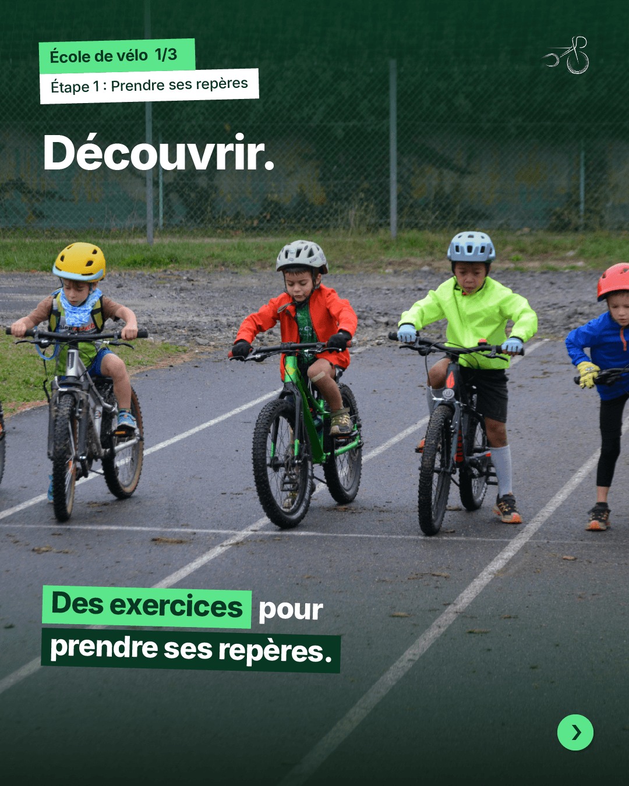
Exercices pour prendre ses repères : familiarisation bienveillante avec le vélo, apprentissage de l'équilibre et premières sensations sans pression.
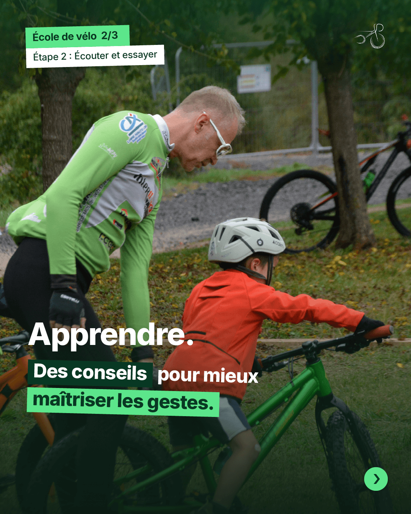
Conseils pour maîtriser les gestes : motricité, pilotage, anticipation des trajectoires et consignes de sécurité transmises par les éducateurs.
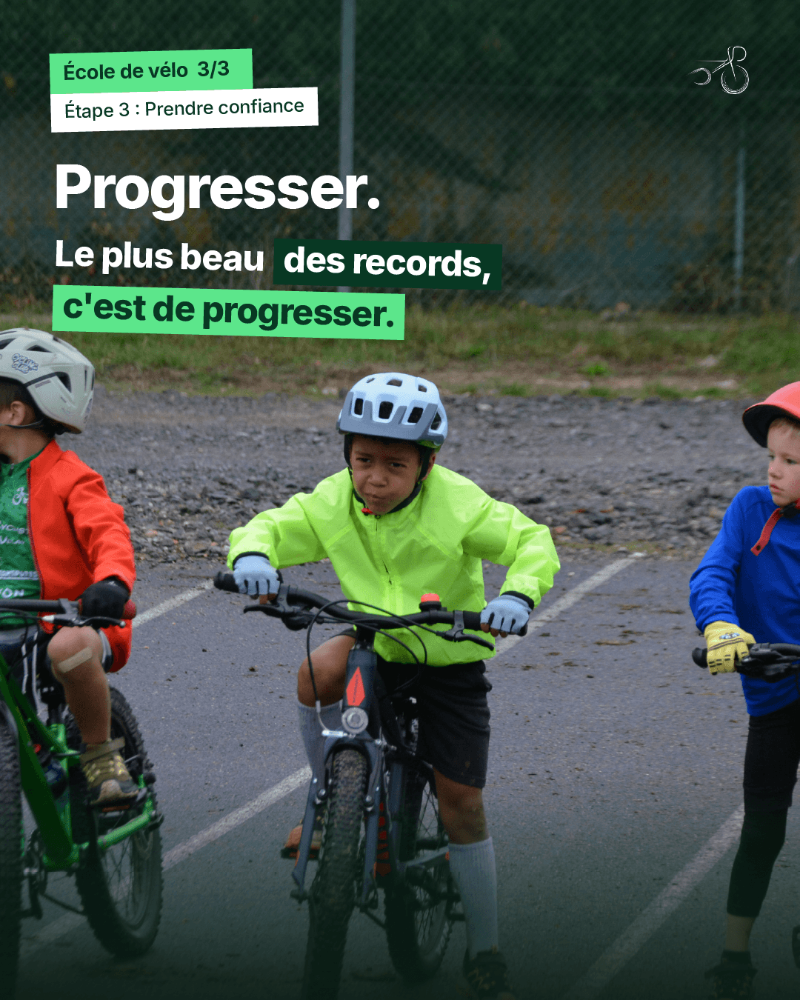
Grandir à son rythme : prise d'autonomie, dépassement personnel sans mise sous pression et émulation collective au sein du peloton.
Gabarits individuels : Post Manifeste, Facebook & LinkedIn
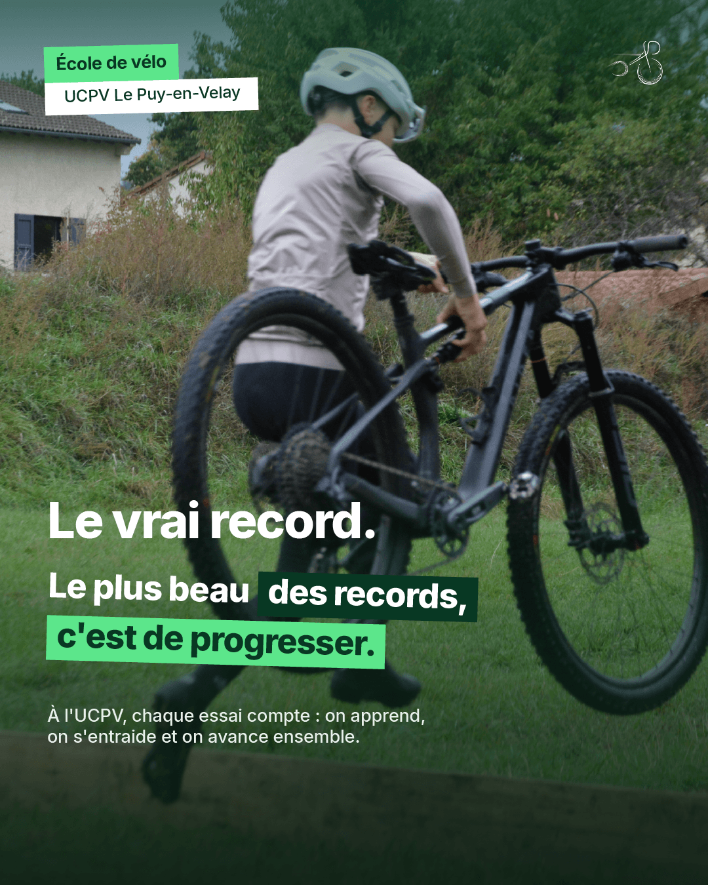
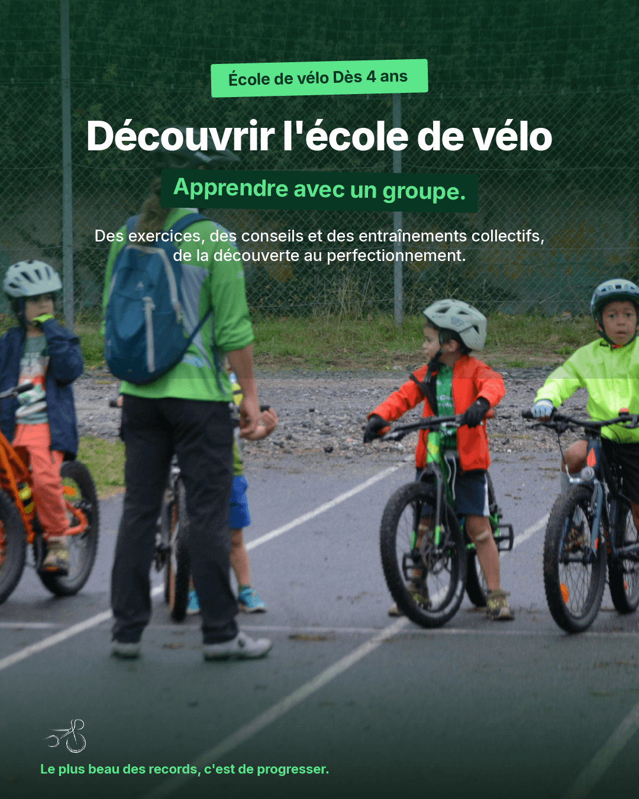
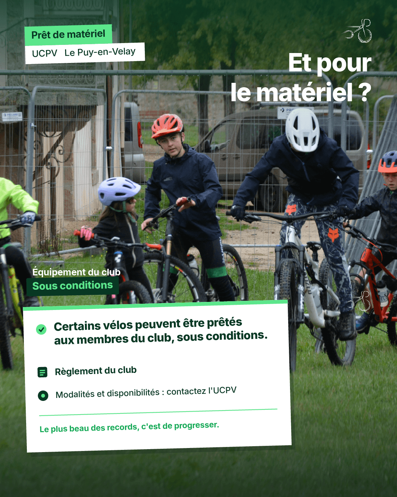
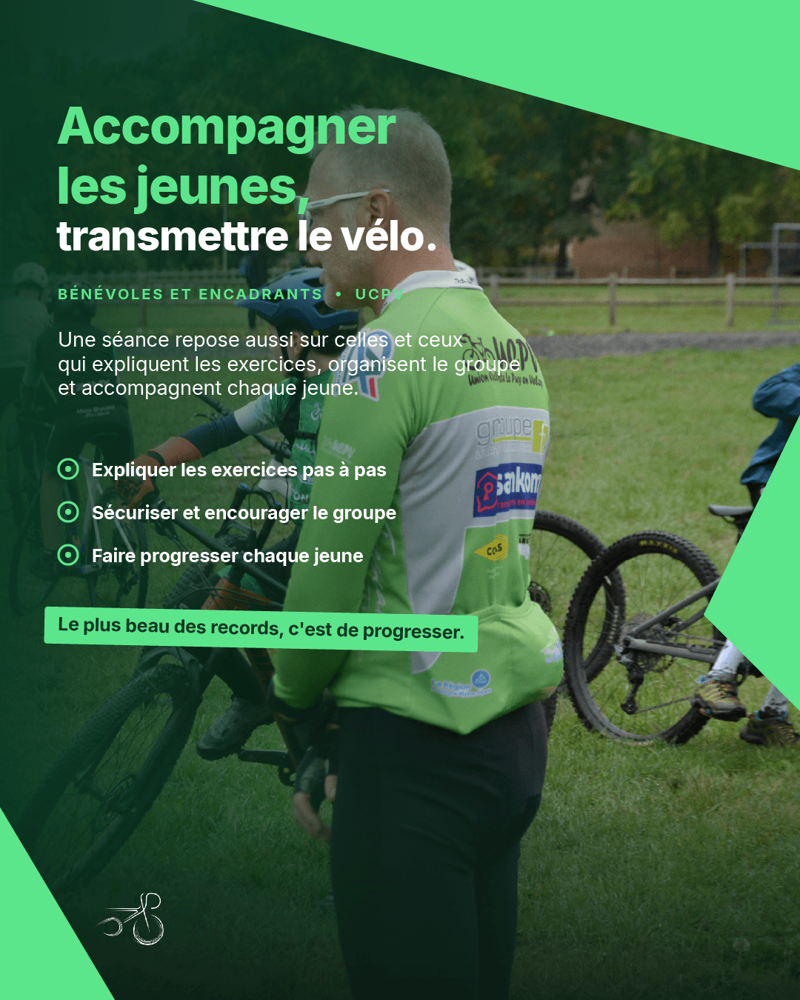
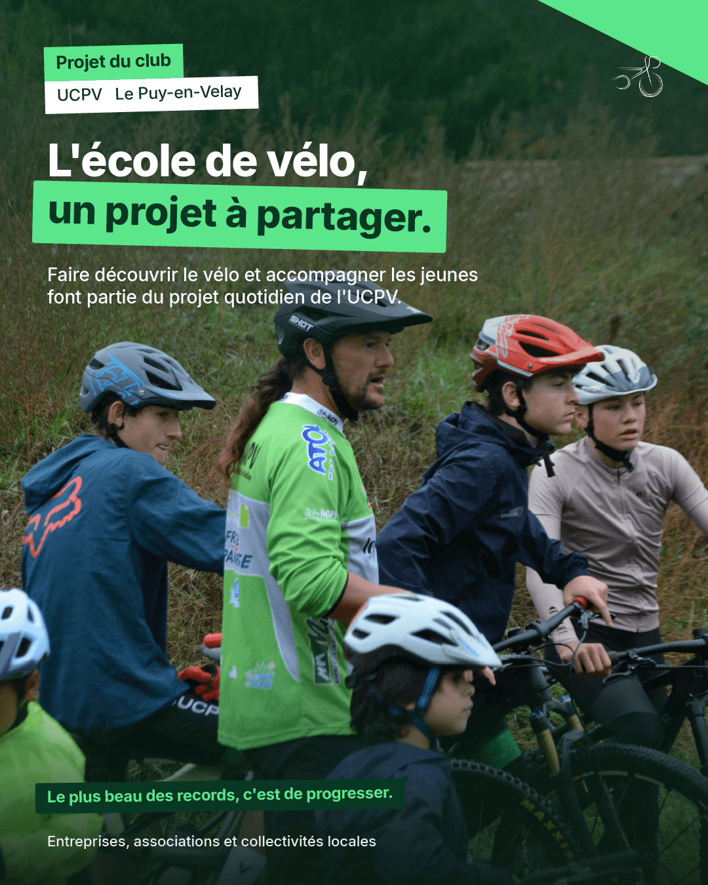
Un communiqué de presse aux normes journalistiques.
Conçu sous Adobe InDesign, ce communiqué de presse officiel est destiné aux rédactions de la presse locale (L'Éveil de la Haute-Loire, La Tribune Le Progrès, La Commère 43, radios locales).
Il synthétise le positionnement sociétal du club, détaille les créneaux d'entraînement de l'école de vélo, explicite la démarche de prêt d'équipement et met à disposition des journalistes les contacts presse et les visuels HD libres de droits.
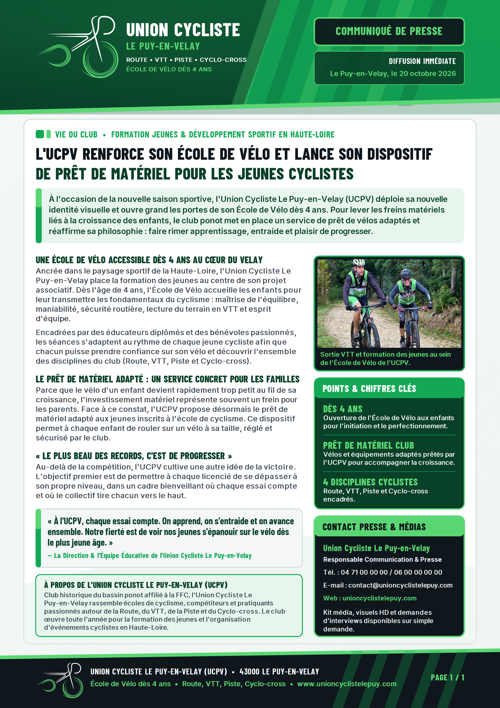
Le film de 30 secondes : de l'illusion du défi à la bienveillance.
La réalisation du spot vidéo de 30 secondes a constitué le défi technique et narratif le plus exigeant de la SAÉ. Nous avons conçu un scénario en 3 temps forts qui joue avec les attentes du spectateur :
L'illusion du défi
Très gros plans serrés et nerveux : jugulaire du casque qui claque, gants agrippés au cintre, regard fixe et concentré, cale de pédale enclenchée. Le spectateur s'attend au départ d'une grande compétition internationale.
La rupture & l'écoute
À 10 secondes pile, un plan large brise l'illusion : pas de ligne d'arrivée ni de foule, c'est un jeune de l'école de vélo hésitant devant un petit talus. L'éducateur bénévole s'approche à sa hauteur avec bienveillance pour lui donner le bon conseil.
La victoire intérieure
Fort de ce conseil, l'enfant s'élance et franchit l'obstacle avec aisance. Il tape dans la main de son entraîneur avec un immense sourire. Écran titre : « Le plus beau des records, c'est de progresser » et signature UCPV.
Spot publicitaire officiel 30s UCPV
Focus méthodologique : Le Storyboard et l'usage assumé de l'IA en renfort
Lors de la phase de post-production et face à des contraintes de calendrier très serrées (remaniement de scènes à la suite des aléas du tournage sur piste, disparité des compétences techniques au sein du groupe), j'ai assumé l'utilisation d'outils d'intelligence artificielle comme accélérateur de productivité :
À partir du découpage plan par plan, des indications de cadrage et de mes croquis papier initiaux, j'ai mobilisé l'IA pour harmoniser le rendu graphique des cases et finaliser la mise en page du storyboard dans les délais impartis. Cela m'a permis de dégager le temps nécessaire pour parfaire l'identité visuelle et les affiches, tout en garantissant que l'intention, la direction artistique et le contrôle qualité restent 100% humains.
Ce que ce projet m'a apporté.
Cette SAÉ 302 a constitué une étape décisive dans mon parcours au sein du BUT MMI. Elle m'a permis de mettre en synergie les compétences accumulées depuis le début de ma formation : Comprendre (transformer un audit en opportunité sociétale), Concevoir (bâtir un concept fort et transversal), Exprimer (déployer une DA cohérente sur tous les canaux) et Entreprendre (piloter un projet créatif sous contrainte de temps).
Assumer le rôle de chef de file créatif auprès de coéquipiers aux profils hétérogènes a été riche d'enseignements managériaux. Nous avons veillé à intégrer chacun selon ses forces (collecte de données, logistique du tournage, préparation de la soutenance) tout en maintenant un niveau d'exigence graphique élevé. Ce projet confirme ma passion pour la direction artistique plurimédia.